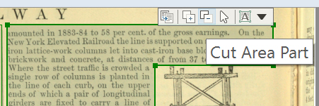
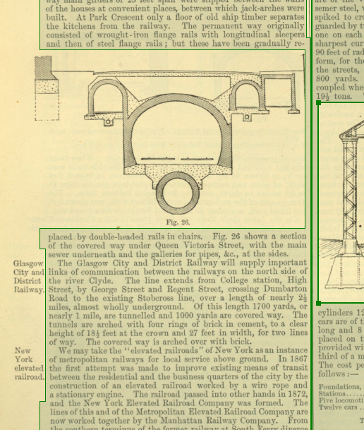

Modify Areas
Areas must be drawn in a basic box shape, but they can be altered to subtract or add to part of the box.
-
Click inside the text box. A new icon bar appears showing the Cut
Area Part and Add Area Part tools.
Figure 1. Icon bar with tools for modifying the text area. 
- Beginning from inside or outside the existing box, draw across its bounding line to modify the shape.
-
This technique can help in managing boxes on a page where an image is inserted
across an entire column. Draw a single text box for the column and leave a small
connecting section along the side of the image when using the Cut
Area Part tool. This is sometimes quicker, and it reduces the
total number of boxes on the page.
Figure 2. Modified text blocks with a connecting area retained. 